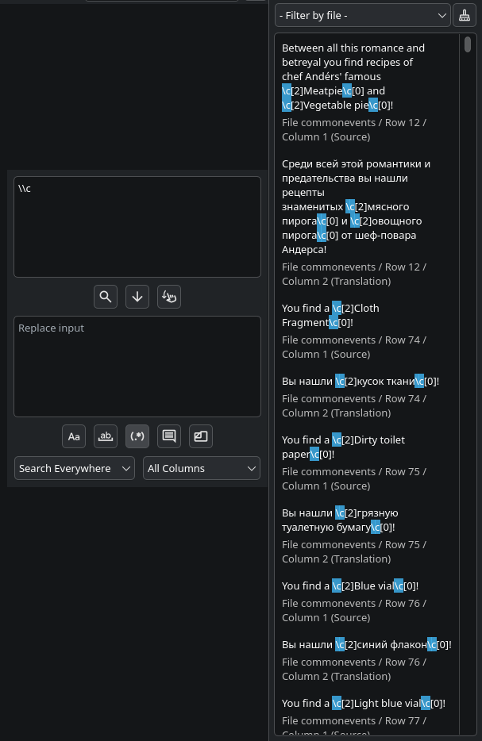

Функции поиска
Откройте панель поиска через кнопку  . Введите текст в поле для поиска и нажмите Enter (или кнопку поиска) чтобы запустить поиск.
. Введите текст в поле для поиска и нажмите Enter (или кнопку поиска) чтобы запустить поиск.
Все элементы меню отвечают для три разных действия - поиск, замену и замещение. Каждое действие описывается внизу в порядке опасности. Поиск лишь ищет; замена и замещение перезаписывают перевод, так что прочтите их секции перед использованием, чтобы ничего не потерять.
Опции поиска
Эти опции применяются ко всем действиям:
| Опция | Эффект |
|---|---|
| Учитывать регистр | Учитывание регистра. |
| Искать целиком | Поиск только слов целиком. |
| Искать по регулярному выражению | Строка для поиска используется как регулярное выражение - прочтите пункт регулярные выражения снизу. |
| Искать в комментариях | Также ищет в комментариях, которые пропускаются по умолчанию. |
| Выбор файлов | Ищет лишь в выбранных файлах, а не по всему проекту. |
| Локация | Поиск везде, только в исходном тексте, или только в переводе. |
| Столбец | Все столбцы, крайний столбец или же любой отдельный столбец. |
Поиск
Поиск лишь находит совпадения и перечисляет их - он никогда ничего не меняет. Результаты появляются в панели результатов, находящейся на правой стороне экрана (можете переместить её куда хотите, даже в отдельное окно).
Поиск сильно оптимизирован: совпадения хранятся как плотно упакованные индексы в памяти, так что даже проект с миллионом совпадений будет хорошо работать.
Действия панели результатов для совпадений:
| Кнопка | Действие |
|---|---|
| Левая | Перейти к этому совпадению в таблице перевода. |
| Правая | Заменить это совпадение текстом из поля замены. |
| Средняя | Поместить текст из поля замены вместо текущего перевода (прочтите замещение). |
Замена
Глобальная замена заменяет каждое совпадение текстом из поля замены, в каждом файле который покрывает поиск.
Перед тем как использовать глобальную замену, для начала запустите поиск, проверьте панель результатов, и подтвердите что там находятся лишь нужные результаты. Одну неправильную замену будет тяжело заметить пост-фактум. Чтобы обезопасить себя, можно заменять по одному, кликая правой кнопкой мыши по результатам панели результатов.
Замещение
С замещением стоит быть осторожным: оно перезаписывает ячейку перевода в каждом ряду, в котором исходный текст совпадает с искомым, заменяя перевод текстом из поля замены - даже если ячейка уже имеет какой-то текст.
Замещение всегда ищет совпадения по исходному тексту и всегда замещает ячейку перевода, независимо от значения опции локации. Замещение также ищет совпадение текста целиком, от начала и до конца, не где-то внутри - так что поиск слова Привет совпадёт лишь с исходным текстом в котором есть только это слово, но не с Привет, мир!. Чтобы искать совпадения где-то внутри текста, используйте регулярное выражение с жадным квантификатором, например Привет .+ - данное выражение совпадёт и с Привет мир, и с Привет Rust, и с Привет что угодно, и так далее.
Делайте также, как с заменой - ля начала запустите поиск, проверьте панель результатов, и подтвердите что там находятся лишь нужные результаты. Чтобы обезопасить себя, можно замещать по одному, кликая правой кнопкой мыши по результатам панели результатов.
Регулярные выражения
Приложения использует регулярные выражения Qt, по сути представляющие собой PCRE2 - юникод полностью поддерживается.
В замене/замещении, эти подмены поддерживаются:
| Последовательность | Вставляет |
|---|---|
\` |
Текст перед полным совпадением. |
\' |
Текст после полного совпадения. |
\+ |
Последнюю захваченную группу. |
\{n} / \{nn} |
Захваченную группу n. \0 - полное совпадение. |
\\ |
Просто \. |
Сначала проведите замены через regex где-то снаружи программы (например, VSCode, или скрипт на Python) чтобы у вас был способ быстро всё откатить - приложение не имеет никакой истории замен.
Пример поиска паттерна \c:
